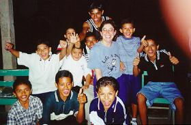
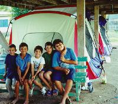
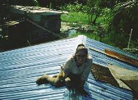
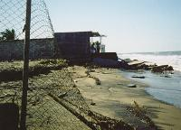
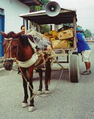
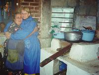
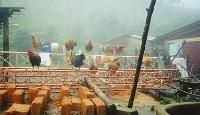
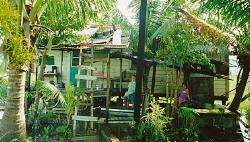

I took the opportunity to spend two weeks in Honduras after Hurricane Mitch to help with the cleanup and relief effort. It was a very great experience for a lot of reasons.
The group I was with were an easy and awesome bunch to work with. There was zero conflict that I can tell and I think the fact that we were working for a greater cause was the reason for this. I will always remember these people.
The trip was quite an adventure. It was my first time in a third world country and I didn't know what to expect. There were ride breakdowns, weather issues, disease to worry about, and plan changes. Nevertheless, our group was there to accomplish as much as we could and we made it happen.

Another reason that this trip was a great experience for me is that it really made me
appreciate my life a lot more. We have so much in this country that I think many of us
take things for granted (like indoor plumbing). Many of the people in Honduras are
very poor yet they have great attitudes. Some of the things that people in the US
complain about seem so trivial and materialistic after seeing how these people live.
During our Stay...
Forty people visited Honduras with our group. We split into four groups of ten people each and covered different areas of Honduras. Our group was comprised of Max Young, Roger Crabb, Linda Riddell, Robert Hernon, Nancy Jansa, Guy Jansa, Paul Wedlake, Sara Logan, Joe Hermann, and me. We picked up Angelica Brooks in La Lima and she acted as translator for us.

Our group was the remote team and we were based out of San Pedro Sula, in the
northern part of the country. Our contact there was Javier Leon.
We visited a banana plantation near La Lima
that had been under water two stories high, a village in Baton that had been
covered in 2-3 feet of mud, mountain villages in Merendon that experienced
massive mud slides, and a city called Porto Cortez which is a peninsula
near Guatemala.
It was amazing to hear what happened to these people during the hurricane. At the banana plantation, people lived on their roofs for a week with the water right up to the bottom of the roofs. In Baton, when the river rose and the muddy water covered their towns, some people did not leave quick enough and stayed in trees until the water receded. The town once had 1000 families but only 300 live there now.
Team Accomplishments
Here is a list of things that our team accomplished when we were in Honduras. The team was there for three more days after I left and I will add their accomplishments to this list.
When we arrived in Tegusicalpa, the entire forty of us organized a warehouse of goods that had been donated to Baxter Institute. This is so the government representatives could account for the goods before they were released for distribution. Then we split up into the various teams.
The clinic was open in every areas that our team visited and the doctor, nurse, and dietician saw over 1000 people.

The team shoveled about 4 inches of mud out of a schoolhouse, cleaned up the desks, repaired the roof, and repainted the outside. When many of the local children saw what we were doing, they pitched in to help.
We dug out about 2 feet of mud in and around an outhouse so it can be used (since there were no indoor toilets). We also dug out the cable from a downed electrical line.
Visited mountain villages to tell the people about the clinic and assessed need in the area.
Built doors for a family where we stayed and delivered building materials to an elderly woman whose home was damaged.
Reroofed part of a church and delivered new roofing materials to two homes
whose roofs where damaged in the hurricane. Reroofed one of the homes.
Encountered people living on the coast who have received no aid yet. They live in shacks, some as small as 8'x8', and some with no electricity. Delivered food and clothing to them. Also, delivered roofing materials and tools so they can repair their homes.
Other Pictures

Destruction on the coast where about 40
meters of the beach was washed away.

Merchant in San Pedro Sula where horse drawn carts
are a common sight.

Linda with one of our hostesses in her kitchen.

Chickens outside of the house where our group stayed
for two nights. Reminds me of the chicken claw that I found in my chicken
soup. Yum.

The house that we reroofed. Note that the house sits
in up to 2 feet of water.